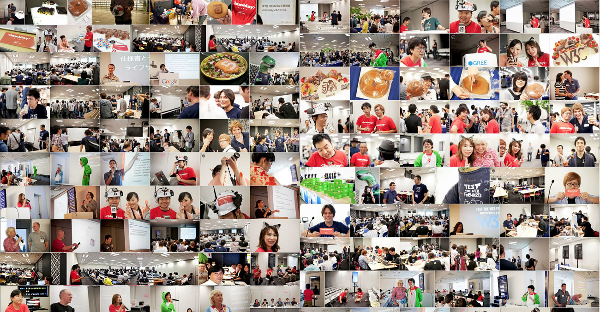
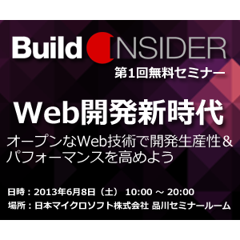
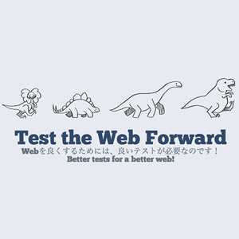
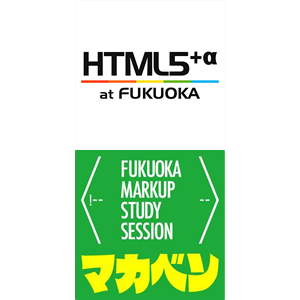
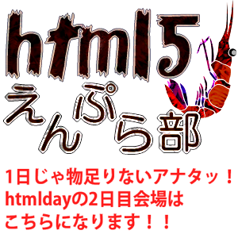
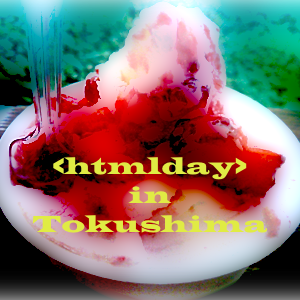

<htmlday> イベント開催マップ
- 参加イベント数
- 0
- 延べ参加予定人数
- 0
<htmlday>当日は大盛況で終えることができました！
イベントを主催して頂いた方々、ご参加頂いた皆さんありがとうございました！
イベントの模様のすべての写真は、Google+イベントからご覧になれます。是非皆さんで当日の模様をアップロードしてください！
htmldayの結果は、htmldayのイベントのひとつとして開催された「W3C Developers Meetup Tokyo」にて、LTとして発表しました！（資料はこちらから）
当日の盛り上がり紹介
全体的なものや、凸撃インタビューについては次の通りです。その他、個別のイベントの盛り上がりの模様は、各イベントの詳細から確認できます（掲載されていないものもあります）。
- htmldayツイートまとめ（togetter）
- 世界のITエキスパートたちを捕獲！ 凸撃インタビュー（@IT）
- <htmlday>に凸撃してきたお話（レポーターBlog）
- <htmlday> ドキッ！女だらけのHTML5 (html5j鹿児島女子部) ※写真のみ
新たに掲載したいサイトなどがありましたら、こちらからお知らせください！
<htmlday>に参加して、日本のWebを盛り上げよう！
<htmlday>とは、日本全国でWeb制作者／開発者向けのイベントを同日に開催することで、日本のWebを一層盛り上げようという「お祭り」です。
<htmlday>で開催されるイベントは、誰でも開催することができ、誰でも参加することができます。
「Web制作／開発について考えよう！」（Think the HTML!）という想いがあれば、どんなイベントでも構いません（単なる飲み会でも！）。
賛同してくださったイベントには、<htmlday>特製ステッカーを差し上げます。
<htmlday>の発端は、東京において、Web技術者向けの大きなイベントが同時開催されることを知ったことでした（W3C Developer Meetup、Test the Web Forward、Build Insider OFFLINE）。 これらのイベントに大なり小なり関わることになった私たちhtml5jは、これらを競合イベントとするのではなく、「手を取り合って日本のWebを盛り上げる」という取り組みにしたいと考えたのです。
もしよければ<htmlday>に参加して、日本のWebを盛り上げるために、あなたのお力を貸してください。
今後も一緒に、日本のWebを盛り上げていきましょう！
この<htmlday>を機会にいろいろなコミュニティと連携したり、新しいコミュニティが生まれたりするきっかけになればと思っています。また、この取り組みが今回だけで終わるのではなく、今後も続けていくためにも、繋がりを持ち続けていきたいと考えています。
一緒に日本のWebを盛り上げていくためにも、よろしければ、今回<htmlday>に参加されたコミュニティ同士を繋げるメーリングリストにご参加ください。もし、この機会に新しくコミュニティを立ちあげたいという方がいらっしゃれば、html5jの名前を利用して頂いても構いません（例えば、「html5j 東京」など。その際は、ご相談ください！もしかしたら、何かお手伝いできることがあるかもしれません。）。
今後も一緒に、日本のWebを盛り上げていきましょう！
<htmlday>への参加方法
<htmlday>に参加するためには、次の2つの方法があります。
イベントをつくる
「Web制作／開発について考えよう！」（Think the HTML!）という想いを持って、何らかのイベントを企画してください。
いわゆる「勉強会」でも構いませんし、単なるお茶会や飲み会でも構いません！
もし、「人を集めたいがネタがない」という場合は、以下のイベントのUstream配信を集まってご覧になる（パブリック・ビューイング）などいかがでしょうか。
- W3C Developer Meetup（配信先）
- Test the Web Forward（配信先）
- Build Insider OFFLINE（配信先 ※Room Bのみ）
<htmlday>に賛同してくださったイベントには、以下の様な特典を用意しています。
- 賛同イベントの主催者の方には、<htmlday>のロゴデータをご自由にお使いいただけます。賛同のお礼を申し上げるメールに、ロゴデータのURLが含まれておりますので、ダウンロードしてご利用ください。
- 6名以上の参加者が見込まれるイベントには、<htmlday>特製ステッカーを送付いたします。イベントの盛り上げにご活用ください。
イベント主催のお申込みは締め切りました。多数のお申込みありがとうございました！
イベントに参加する
以下の開催イベント一覧から、お近くのイベントにご参加ください。
もしかすると、<htmlday>特製ステッカーがもらえるかも！
お住まいのお近くにイベントがない場合は、知り合いに声をかけて、開催することをぜひ検討してみてください！
<htmlday>イベント凸撃生放送 敢行！！
<htmlday>の当日、各イベントをトツゲキ取材を敢行することになりました！
配信はニコニコ生放送で行います。配信先はこちら。
- 13:00 - 14:30
- 第1回 (Build Insider OFFLINE)
- 15:00 - 17:00
- 第2回 (Test the Web Forword)
- 18:00 - 22:00
- 第3回 (W3C Developers Meetup Tokyo)
東京で行われる W3C Developers Meetup, Test the Web Forward, Build Insider OFFLINEにhtml5jスタッフが潜入。会場の様子や、舞台裏のスタッフにライブインタビューしたりする予定です。公式配信とはまた違ったライブ感のある雰囲気をお楽しみいただけると幸いです。
 凸撃用装備 着々と準備中。
凸撃用装備 着々と準備中。 レポーターの村岡正和さん
レポーターの村岡正和さん 突撃爆弾娘の太田智美さん （※ 取扱い注意）
突撃爆弾娘の太田智美さん （※ 取扱い注意）
- ※ 回線混乱等不測の事態により配信を中止せざるを得ない可能性があります。ご了承ください。
開催イベント一覧
-
 W3C Developer Meetup Tokyo
W3C Developer Meetup TokyoW3C Developer Meetupはエンジニア・デザイナーとW3Cで活躍する様々な組織のエンジニア・デザイナーが交流し、最新のテクノロジーやサービスについて意見を交わすイベントです。
当日の盛り上がりの模様はこちら！
東京都 港区 六本木6-10-135.6604 139.729043 -
Build Insider OFFLINE: 第1回 Web開発新時代
開発生産性の向上と、アプリのパフォーマンスアップを実現するための「オープンな次世代Web技術」を学べる、エッジな技術者のためのカンファレンス。
- 募集人数:
- 350名
- 開催地:
- 日本マイクロソフト株式会社 品川セミナールーム
- 主催:
- ハッシュタグ:
- #bieroff
当日の盛り上がりの模様はこちら！
- Build Insider OFFLINE懇親会後に撮った全員での写真（アルコール度数の強いお酒を出し過ぎてみんな酔っぱらっています。）
- Gloopsフォトブース（Build Insider的 自己アピールを楽しむ Gloopsフォトブースの様子です。ご自身のスマフォで撮った方もいらっしゃいましたが事務局のカメラでも一部お取りしました。）
東京都 港区 港南 2-16-3 品川グランドセントラルタワー35.6266104 139.7409874 -
Test The Web Forward
-
 htmlday 2013 in Fukushima
htmlday 2013 in Fukushima「手を取り合って、日本のWebを前に進めよう！」
日本のWeb制作／開発に携わる皆さん、2013年6月8日に、これからのWebについて考えるイベントを開催します。Webを考え、皆さんをつなぐイベントとして、ふくしまで開催することとなりました！
主催は「html5j」そし て 「エフスタ!!」です。
お楽しみに！
- 募集人数:
- 40名
- 開催地:
- 市民交流プラザ 特別会議室
- 主催:
- ハッシュタグ:
- #htmlday #efsta14
当日の盛り上がりの模様はこちら！
福島県駅前 郡山市 二丁目11-1 ビッグアイ7階37.400199 140.388162 -
第7回 HTML5など勉強会 <htmlday>@大阪
HTML5など勉強会はHTML5-WEST.jp 主催の勉強会です。
この勉強会はHTML5やそれに関連技術を発表し合い、HTML5に関心のある方々の技術の向上、情報交換を行う場です。今回は<htmlday>に賛同して開催いたします。- 募集人数:
- 20名
- 主催:
大阪府34.687394 135.525844 -
 HTML5 Enhancements 2013 @SaCSS
HTML5 Enhancements 2013 @SaCSS札幌で毎月開催しているSaCSSの特別編です！
6月8日に開催される<htmlday>のイベントに合わせて、SaCSSでもHTML5を特集としたセミナーを開催します！
- 募集人数:
- 30名
- 開催地:
- 札幌市民ホール 第2会議室
- 主催:
- ハッシュタグ:
- #htmlday_SaCSS
北海道 札幌市 中央区北1条西1丁目43.062338 141.355623 -
HTML5+α @福岡 feat. 福岡マークアップ勉強会
回を重ねるごとに、福岡の多くのWeb界隈の人たちを集めて人気となっている「HTML5+α @福岡」と「福岡マークアップ勉強会」が、初の合同勉強会を開催します！！
「HTML5+α @福岡」とは
「+α」らしく、HTML5にこだわらず、Web周辺の興味のあることについてイロイロと勉強会を開催しており、これまでに計19回の実施回数を数えます。
「福岡マークアップ勉強会」とは
勉強会に参加したことのない方をメインターゲットにした、初心者向けのゆるーい勉強会。勉強会参加への第一歩になるような、楽しい勉強会を目標にワイワイガヤガヤやってます。
- 募集人数:
- 21名
- 開催地:
- WAVE福岡(天神)校
- 主催:
- ハッシュタグ:
- #html5Fukuoka #fkmarkup
当日の盛り上がりの模様はこちら！
福岡県1 福岡市 中央区大名1-14-45 Qiz 天神ビル 3F33.587644 130.396674 -
 <htmlday> ドキッ！女だらけのHTML5
<htmlday> ドキッ！女だらけのHTML5html5j 鹿児島女子部が企画する、ワークショップ＆交流会です。参加者でweb標準について焼酎片手に語っちゃいます！！！（事前アンケートあり）
- 募集人数:
- 20名
- 開催地:
- Cafe&Dining Bar BEACH（ビーチ）
- 主催:
-
html5j鹿児島女子部
おごweb
- ハッシュタグ:
- #html5jkg
鹿児島県 鹿児島市 千日町９−２８31.587927 130.556844 -
 <htmlday> 『USTみながらお酒も頂こう＠新潟』
<htmlday> 『USTみながらお酒も頂こう＠新潟』毎月開催している『WordBench新潟』の特別編です。
みんなでUST配信をみながら語りませんか？
- 募集人数:
- 16名
- 開催地:
- SBR
- 主催:
- ハッシュタグ:
- #wbniigata
新潟県 新潟市 中央区弁天3丁目2－2337.913529 139.058161 -
 みんなでつくるスマホアプリ！ in Sabae <htmlday>
みんなでつくるスマホアプリ！ in Sabae <htmlday>スマホアプリユーザー、デザイナー、プログラマー、行政マンからギークまで、スマホアプリをつくって見たい人集まれ！
昼間はガシガシ開発（いわゆるハッカソン）、夜はできたアプリを肴にワイワイ交流する、ハイブリッドなイベントです！
- 募集人数:
- 30名
- 開催地:
- 株式会社jig.jp 7Fセミナースペース
- 主催:
-
北陸エンジニアグループ
- ハッシュタグ:
- #htmldayfukui
福井県 鯖江市 新横江2-3-435.942756 136.198842 -
![[イベント名]](http://www.tadadeki.com/img/tadadeki_logo.png) タダデキ
タダデキ「タダで出来る！タダモノではない勉強会」通称「タダデキ」。しばらく中断しておりましたが、この機会に乗じてITやWEBに関する勉強会を開きたいと思っています。普段仕事で時間が無い、土日は１人だとゴロゴロしてしまうという方向けの、ゆるい勉強会です。夏休みの宿題を友達の家にやりにいくくらいの緩さで、楽しみましょう！
- 募集人数:
- 20名
- 開催地:
- 株式会社アラタナ 会議室「牛」
- 主催:
-
IMO
宮崎県 宮崎市 錦町1番地10号宮崎グリーンスフィア壱番館5階31.916337 131.43122 -
![[イベント名]](images/logo/4e130d712b86b.gif) Vol.8は「TalkNote × Frontrend（フロントレンド）」
Vol.8は「TalkNote × Frontrend（フロントレンド）」CyberAgentが誇る、Webフロントエンドエンジニアがお送りするフロントレンドシリーズ。
今回「TalkNote × Frontrend（フロントレンド）」と題して静岡に登場です！
- 募集人数:
- 100名
- 開催地:
- 静岡県コンベンションアーツセンター「グランシップ」
- 主催:
-
TalkNote（トークノート）という名の勉強会
- ハッシュタグ:
- #talknote8
静岡県 静岡市 駿河区池田79-434.985692 138.417148 -
 SenchaUG 勉強会 第9回@札幌
SenchaUG 勉強会 第9回@札幌Sencha製品についての説明や、Sencha製品を扱う際の基礎知識
新しくアップデートされたSenchaExtJS4.2・Touch2.2の新機能の説明から、Siestaを利用したユニットテスト開発環境の構築など盛りだくさんです。
また、ハンズオンとしてSenchaExtJSを利用したDOM操作やSenchaCmdでのプロジェクト生成からアプリケーションのデプロイを行う予定です。
- 募集人数:
- 30名
- 開催地:
- かでる2.7（北海道立道民活動センター）
- 主催:
- ハッシュタグ:
- #senchaug
北海道 札幌市 中央区北2条西7丁目道民活動センタービル43.06317 141.345498 -
 FWW_サイト研究会 (仮) vol.35
FWW_サイト研究会 (仮) vol.35 -
 Android勉強会【Android Sessions】<htmlday>特別版
Android勉強会【Android Sessions】<htmlday>特別版毎月、第2土曜日に開催される、Androidの使い方からアプリ開発まで１日で色んな事をやっちゃおうというAndroidの勉強会です。
記念すべき第6回目は<htmlday>という事もあって、Androidメインではなく、「html5やjavascriptをメインに、AndroidのWebViewを使ったハイブリッドアプリ開発！ハ～ンズオン！！」というタイトルで開催したいと思います！
↑長ぇよ(-ε-)- 募集人数:
- 20名
- 開催地:
- 株式会社 インタークロス
- 主催:
-
Android×Sessions
宮崎県 宮崎市 宮崎駅東3丁目7-131.919811 131.43389 -
 <htmlday>をつまみにビール飲みながらWebの未来を考える@愛媛
<htmlday>をつまみにビール飲みながらWebの未来を考える@愛媛東京で開催しているWeb制作イベント「htmlday」。UST配信を見ながらWeb制作の未来についてざっくばらんにお話しませんか。エンジニアもコーダーもデザイナーも、Web制作に携わる人大歓迎です。15時頃には松山銘菓を食べながら松山の情報発信にも貢献！
- 募集人数:
- 10名
- 開催地:
- 株式会社アイムービック 会議室
- 主催:
愛媛県 松山市 千舟町6-5-933.83703 132.760156 -
amplifizr, Vol. 7 “コンテンツを活かすためのUI設計”
2012年11月23日に基礎講座を開催、先月5月11日に第二部を開催した、長谷川 恭久さんの「コンテンツ三部作」の最終章、“コンテンツを活かすためのUI設計”をamplifizr, Vol. 7として開催します。
「コンテンツ三部作」は岡山で初演後、東京、大阪、高松、郡山の各地で再演され、好評を博しているセミナーです。第一部、第二部で学んだ内容を踏まえて、コンテンツを活かすためのインターフェイスについて一緒に考えましょう。
- 募集人数:
- 20名
- 開催地:
- 岡山シティミュージアム 4F 講義室
- 主催:
- ハッシュタグ:
- #amplifizr_v7
岡山県 岡山市 北区駅元町15-134.666716 133.915802 -
 みんビズ東北サミット2013
みんビズ東北サミット2013Google、KDDIグループではじめた「みんなのビジネスオンライン（みんビズ）」の運営スタッフが開催する「みんビズ東北サミット2013」を開催します。みんビズやJimdoを利用している皆さん、これから利用しようと考えている皆さんが一同に会し、ホームページの制作や改善のノウハウを学びます。
- 募集人数:
- 100名
- 開催地:
- KDDI株式会社 東北支社
- 主催:
宮城県 仙台市 青葉区一番町4-1-25 東二番丁スクエア38.263359 140.872459 -
 なごにゃー vol.0
なごにゃー vol.0「なごや」と名古屋弁の「～みゃー」とさらに「ネコ」をかけて「なごにゃー」。
ゆるーく長く続いて愛される、名古屋のwebに関するゆるーい勉強会を立ち上げました！
- 募集人数:
- 20名
- 開催地:
- 株式会社エッコ 3F
- 主催:
-
なごにゃー実行委員会
- ハッシュタグ:
- #nagonya
愛知県 名古屋市 中区大須3丁目2-15 栄南KTビル35.161833 136.90441 -
 WCAN mini Design Vol.9
WCAN mini Design Vol.9こもり まさあき さんを講師に、Responsive Web Designの最新事例や技法を取りあげながら、次世代のWebデザインプロセスへのステップアップするために必要な考え方やその方法を紹介します。
- 募集人数:
- 40名
- 開催地:
- ベースキャンプ名古屋
- 主催:
- ハッシュタグ:
- #wcan
愛知県 名古屋市 中村区名駅3-18-535.172775 136.887466 -
 第33回 .NET 勉強会 / ヒーロー島 with GDG中国
第33回 .NET 勉強会 / ヒーロー島 with GDG中国広島の.NET関連の勉強会を開催されている.NET勉強会ヒーロー島さんでGDG中国のイベントを開催するつもりです。Microsoftの技術の中で、ほそぼそとGoogle技術だったり、HTML5のネタをねじ込みます！
- 募集人数:
- 30名
- 開催地:
- 日本マイクロソフト株式会社 中四国支店 セミナールーム
- 主催:
- ハッシュタグ:
- #gdgchugoku
広島県 広島市 中区鉄砲町 7-1834.395224 132.464447 -
htmlday 勝手に三次会東京都 千代田区 平河町2-16-135.679779 139.741783
-
 HTML朝活会＠東京アプリ・ワークショップ課外授業
HTML朝活会＠東京アプリ・ワークショップ課外授業都内でHTML5の体験講座を開催している「東京アプリ・ワークショップ」の早朝課外授業（笑）です。
- 募集人数:
- 10名
- 開催地:
- マクドナルド 新宿大ガード西店
- 主催:
- ハッシュタグ:
- #tokyoAppWorkShop
当日の盛り上がりの模様はこちら！
東京都 新宿区 西新宿７丁目１０−５35.69392 139.698306 -
<htmlday> in Tokushima
html5 開発効率化のための開発ツール勉強会やります！
- 募集人数:
- 20名
- 開催地:
- シビックセンター 4F 活動室
- 主催:
-
<htmlday> in Tokushima 実行委員会
- ハッシュタグ:
- #html5tksm
徳島県 徳島市 元町1丁目24番地34.073586 134.549139 -
 Web開発新時代におけるセキュリティーや情報モラルの問題について
Web開発新時代におけるセキュリティーや情報モラルの問題についてWeb開発新時代の，Build Insider OFFLINEのUstreamライブ中継を見ながら，WebインテリジェンスやセマンティックWebなど,新しいWeb開発が進展していく中でのセキュリティーのあり方や情報モラルについて考える.
- 募集人数:
- 30名
- 開催地:
- 東京工業大学イノベーションセンター
東京都 港区 芝浦３－３－６35.644322 139.747767 -
HTML5 PIRATE
Tizen Developer ConferenceでTizen端末を入手しました。
Tizenアプリコンテストは賞金総額約４億円（HTML5で作ったアプリは＋500万円）
みんなでHTML5について語りながら、アプリコンテストの賞金目指しましょう！
※当日Tizen端末も持って行きます！- 募集人数:
- 10名
- 開催地:
- ＣＯＣＯ'Ｓ・秋葉原店
- 主催:
東京都 千代田区 外神田２−４−４ 第一電波ビル新館 ２Ｆ35.699607 139.768842 -
 Design Pledge, Vol.2
Design Pledge, Vol.2Design Pledge（デザイン・プレッジ）は、DTPやWebのフィールドにこだわらず、大きなくくりでデザインに関するものを扱っているセミナーイベントです。
今回はCSS Niteを主宰されている株式会社スイッチの鷹野さんをお招きして、今どきのWeb制作について、Web制作でも重要なillustratorの話、フォントの作り方についてのセミナーを行います。
- 募集人数:
- 50名
- 開催地:
- 株式会社インタークロス 1F
宮崎県 宮崎市 宮崎駅東３丁目７−１31.919811 131.43489 -
 concrete5 第6回 青森勉強会
concrete5 第6回 青森勉強会オープンソースCMS「concrete5」の青森ユーザーグループが主催する第6回目の勉強会を開催します。
これからconcrete5を使ってみたいという方や、concrete5ってなに？という初心者の方も大歓迎！
今回は、コンポーザ機能を重点的に解説していきます。
- 募集人数:
- 8名
- 開催地:
- フューチャーラウンジ 八曜日
- 主催:
青森県 八戸市 内丸１丁目５−２２ 野々口ビル 3F40.515521 141.489308 -
テクノ手芸＠福岡テクノ手芸＠福岡
普段はwebとかに携わってる人達でテクノ手芸に挑戦します。
- 募集人数:
- 15名
- 開催地:
- 博多図工室
- 主催:
- ハッシュタグ:
- #techno_craft
福岡県 福岡市 中央区高砂2丁目1番17号33.578962 130.408371 -
 AngularJS で遊ぼう <htmlday>@広島
AngularJS で遊ぼう <htmlday>@広島広島でも イベントをしようということで、 GDG Chuugoku の マネージャ 横山さん が広島にいっらしゃっていて、 「ヒーロー島 ジニアス・スペシャル にて AngularJS のセッションをされます。これの延長線として、横山さんと一緒に AngularJS で遊びたいと思います。
AngularJSで遊びたい方に限らず、または、AngularJS とは関係なく HTML,CSS,Javascript 関連で一緒に遊びたい方、または、<htmlday> を一緒に盛り上げたい方がいれば是非。
- 募集人数:
- 10名
- 開催地:
- 中町ビルSEED
広島県 広島市 中区中町 2-22-2F34.390219 132.460439 -
 HTML5 Canvas入門セミナー
HTML5 Canvas入門セミナー話題のHTML5テクノロジーの中でも人気の高いCanvas APIについて解説します。Canvas APIは、Webページ上に美しいグラフィックを描画したり、アニメーション効果によるインタラクティブなコンテンツの作成が可能になったりと、Webに新しい魅力を与えてくれるものです。Webの最新技術や、Canvas APIにご興味がある方はぜひご参加ください。
- 募集人数:
- 20名
- 開催地:
- インターネット・アカデミー渋谷校 A教室
東京都 渋谷区 道玄坂2-16-4 野村不動産渋谷道玄坂ビル7階35.658767 139.696921 -
 デジハリ大阪html5部＠htmlday
デジハリ大阪html5部＠htmldayデジタルハリウッド大学院とデジタルハリウッド大阪校スクールの有志による部活html5部による勉強会＋交流会です。webデザインにイかすhtml5を考えます。今回はhtmldayスペシャルとして学内だけでなく学外からも参加者を募集します。
- 募集人数:
- 15名
- 開催地:
- デジタルハリウッド大阪校2F教室
- 主催:
- ハッシュタグ:
- #html5jDHOsaka
大阪府 大阪市 北区鶴野町4-1134.70863 135.501084
主催
協力

賛同企業・団体


スタッフ一覧
-
 吉川 徹（よしかわ とおる）プロデューサー（仮）
吉川 徹（よしかわ とおる）プロデューサー（仮）フリーランスのWebエンジニアとして活動中。html5jのスタッフとして、HTML5の最新動向を追うとともにHTML5の普及促進に務める。また、Google Developer Expert（Chrome）として、Chrome関連の情報発信も行なっている。その他、Webに関する講演や記事執筆、jQuery Mobile担当講師（allWebクリエイター塾）など。著書に「jQuery Mobileパーフェクトガイド」と「HTML5ガイドブック増補改訂版」がある。
@yoshikawa_tさんをフォロー -
白石 俊平（しらいし しゅんぺい）<htmlday> 言い出しっぺ
html5j管理人、株式会社オープンウェブ・テクノロジー代表取締役、「(白石俊平と) カッコいいやつら」プロデューサー、読書するエンジニアの会主催、などなど。
@Shumpeiさんをフォロー -
 秋葉 秀樹（あきば ひでき）アートディレクター
秋葉 秀樹（あきば ひでき）アートディレクター株式会社ツクロア（tuqulore） 代表取締役／デザイナー。DTP・グラフィックデザイン・Webフロントエンド・Flash・3DCGと幅広く携わる。主な作品は海遊館やサンシャイン水族館に公認されたAndroid／iPhoneアプリ「Ikesu」。NFC技術を世界で初めて水族館で利用して魚をスマートフォン内に持ち帰られる体験を提供し、2ヶ月足らずで一万人が利用した。近著は『10倍ラクするIllustrator仕事術』（技術評論社）や『すべての人に知っておいてほしい HTML5+CSS3の基本原則』（MdN）など。2013年4月より株式会社ツクロア（http://tuqulore.com）を設立。
@Hidetaro7さんをフォロー -
 一色 政彦（いっしき まさひこ）株式会社デジタルアドバンテージ
一色 政彦（いっしき まさひこ）株式会社デジタルアドバンテージ10年続く＠IT／Insider.NETと、4月にオープンしたBuild Insiderの編集長を兼務。.NETとJavaScriptを中心に開発技術を追いかけており、記事の編集・執筆や技術者向けイベントの企画などを行っている。
@isshikiさんをフォロー -
松崎 剛（まつざき つよし）<htmlday> 名付け親
Web 開発、クラウド開発、Office 開発 (SharePoint などサーバー技術を絡めたもの) など、Webを中心とした関連技術を中心に、プログラマーの皆様向けのセミナーや紹介活動をしています。（ブログ）
-
 井上 章（いのうえ あきら）日本マイクロソフト株式会社
井上 章（いのうえ あきら）日本マイクロソフト株式会社ASP.NETやJavaScriptをはじめとするWeb開発テクノロジーを中心に活動中の日本マイクロソフト株式会社エバンジェリスト。（ブログ）
@chack411さんをフォロー -
 若狭 正生（わかさ まさお）html5j 余計な事する係
若狭 正生（わかさ まさお）html5j 余計な事する係本業は株式会社コネクティに所属し企業コンサルティングなどを行っているが、html5jや地図関係、動画配信などの本業に生かしきれないものにも関わりをもっている。主にくだらない事に全力を投入して"無駄"や"冷たい視線"を感じる事に生き甲斐を持って活動しているようだ。（ブログ)
@wksさんをフォロー -
村岡 正和（むらおか まさかず）HTML5-WEST.jp
神戸でITシステム開発，事業開発コンサルティングを営業。HTML5-WEST.jpの代表として西日本でHTML5関連 の話題を盛り上げる活動を行っている他，GDG京都，CSS Nite in OSAKAなど関西圏の様々なコミュニティ活動に関わっている。
@bathtimefishさんをフォロー